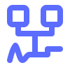
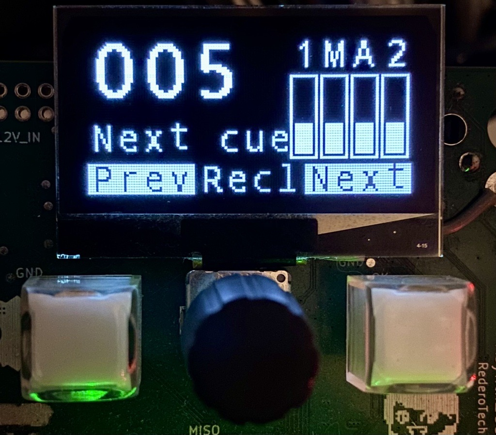
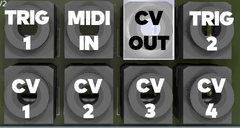
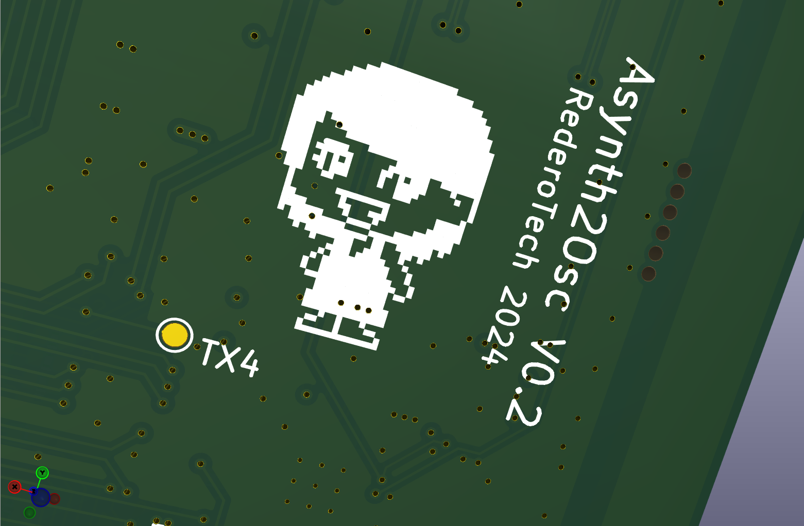

Cue Recall Manager
Recall cues to change context on remote software or hardaware, with immediate Prev/Next navigation or with rotary encoder to jump to a specific cue.
Built for artists and technicians who want to get some expression from analog synthetizer rig across sound, lights, and visuals.
aSynth2OSC Eurorack Module bridges analog CV, triggers, cue remote and MIDI to robust OSC over Ethernet.
Send those to your favorite show environment like Open Stage Control, Chataigne, Max/MSP, PureData, TouchDesigner, SuperCollider, Jitter, Resolume, Notch, Reaper, QLab etc. and perform with tactile immediacy, without the need for a computer on stage.

aSynth2OSC is not just a converter. It is a performance bridge: tactile modular control in front, deterministic OSC workflows in the back. Every modulation can become a color, an intensity curve, a video state, or a spatial path position.
Recall cues to change context on remote software or hardaware, with immediate Prev/Next navigation or with rotary encoder to jump to a specific cue.
Convert 4 CV channels to normalized float values, with adjustable period and hysteresis, ideal for smooth automation lanes in media engines.
Receive incoming OSC commands to show confirmations directly to the performer OLED screen. You can also set the CV Analog output and flash buttons LEDs if needed.
Typical integrations in contemporary live setups where music, visual systems, and stage automation are tightly linked.
Use the encoder to select cue 128, validate, and instantly recall matching states and mappings in your lighting console, video server, and audio engine.
Patch an LFO or envelope into CV 1 jack input and map normalized OSC floats to beam spread, strobe depth, shader intensity, or playback speed.
Drive object (X,Y) coordinates from CV joystick pairs and trigger snapshots for trajectory changes, making movement feel physically performed instead of programmed.
Forward MIDI PC #7 sequencer song pointer into OSC pathways so context stay in sync with external show controllers and render engines by recalling their snapshots.
A practical end-user workflow for powering on, recalling cues in performance mode, entering Settings mode, and safely returning to performance mode.
/ping to verify OSC round-trip with /pong.14 HP Eurorack standard module. Powered by +12V, -12V from the Eurorack standard bus or 5V USB dedicated power supply (estimated 250mA).

The screen shows live performance data and navigation:

Eight 1/8" TRS jacks provide all signal I/O pathways:
Factory defaults and key OSC paths most often used during setup, diagnostics, and live operation.
| Setting | Default |
|---|---|
| IP Mode | Static |
| Device IP | 192.168.1.42 |
| Netmask | /24 (255.255.255.0) |
| Target IP | 192.168.1.142 |
| OSC TX Port | 42010 |
| OSC RX Port | 42011 |
| Path | Arguments | Purpose |
|---|---|---|
| /ping | none | Connectivity test, replies with /pong |
| /msg | string | Display message on OLED status line |
| /cue | int | Remote change the current cue number |
| /aout | float 0.0..1.0 | Set normalized DAC output value |
| /idle | none or bool | Blink Next LED until Next button is pressed |
| Path | Arguments | Purpose |
|---|---|---|
| /cv/1..4 | float 0.0..1.0 | Normalized CV input values |
| /trig/1..2 | bool F or T | Trigger state values |
| /cue | int | Current recalled cue value |
| /pong | none | Reply to incoming /ping |
| /note | int channel, int pitch, int velocity | Note On and Note Off (velocity 0) |
| /control | int channel, int controller, int value | MIDI Control Change |
| /program | int channel, int program | MIDI Program Change |
| /pitch | int channel, int value | Pitch Bend value 0..16383 (8192 center) |
| /clock | none | MIDI timing clock pulse |
| /start | none | MIDI start and MMC play mapping |
| /stop | none | MIDI stop and MMC stop/pause mapping |
| /continue | none | MIDI continue playback |
| /songpos | int value | Song Position Pointer value |
| /mtc | int hour, int minute, int second, int frame, int fps | MTC full frame |
| /mtc_qf | int piece, int value | MTC quarter frame piece/value |
Incoming OSC parser accepts single messages and bundles. For MIDI forwarding, note on/off follows the MIDI Note menu setting, while Control Change, Program Change, Pitch Bend, transport, Song Position, and MTC remain active.
Enter menu mode by holding the rotary encoder for 2 seconds (center label switches from Recl to Menu).
Use Prev/Next to navigate items, turn the encoder to change a value, short press to reset to default, long press 2 seconds to exit.
All changes are saved immediately to persistent storage. Network settings take effect only when exiting the menu.
| # | Menu Label | Default | Range / Values | Description |
|---|---|---|---|---|
| 1 | CV period (ms) | 20 ms | 10 – 200 ms, step 5 | CV sampling interval. Lower = more responsive, more OSC traffic. |
| 2 | CV Hysteresis (mV) | ~33 mV | ~17 – 165 mV, step ~17 | Minimum CV change required before a new OSC float is sent. Reduces redundant messages on stable signals. |
| 3 | IP Mode | 0 (Static) | 0 = Static, 1 = DHCP+LL, 2 = DHCP+FB | Ethernet address assignment mode. |
| 4 | Target IP | 142 | 0 – 255 | Last octet of the OSC target (receiver) IP. Shared prefix set by IP bytes 1–3. Effective default: 192.168.1.142. |
| 5 | Target Port | 10 → 42010 | 0 – 999 (offset from 42000) | OSC transmit port. Effective port = 42000 + offset. |
| 6 | Device IP | 42 | 0 – 255 | Last octet of the board IP address. Effective default: 192.168.1.42. |
| 7 | Device Port | 11 → 42011 | 0 – 999 (offset from 42000) | OSC receive port. Effective port = 42000 + offset. |
| 8 | CIDR Mask | 24 (/24) | 0 – 32 | Subnet mask length. /24 = 255.255.255.0. |
| 9 | IP byte 1 | 192 | 0 – 255 | First byte of the shared subnet prefix (applies to both device and target IPs). |
| 10 | IP byte 2 | 168 | 0 – 255 | Second byte of the shared subnet prefix. |
| 11 | IP byte 3 | 1 | 0 – 255 | Third byte of the shared subnet prefix. |
| 12 | MIDI Note (0:ignore 1:thru) | 0 (ignore) | 0 = ignore, 1 = thru | Whether incoming MIDI Note On/Off messages are forwarded to OSC. Other MIDI types (CC, Program, Pitch Bend, transport, Song Position, MTC) are always forwarded regardless of this setting. |
